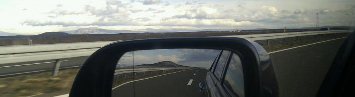

Dubrovnik - Orašac
Il nostro campeggio è facile da trovare, situato proprio lungo la strada costiera adriatica. Godetevi la perfetta connettività e la pace offerta dalla nostra micro-posizione.
Coordinate GPS
N 42 41.944'
E 018 00.355'
Orašac, Dubrovnik, CROAZIA